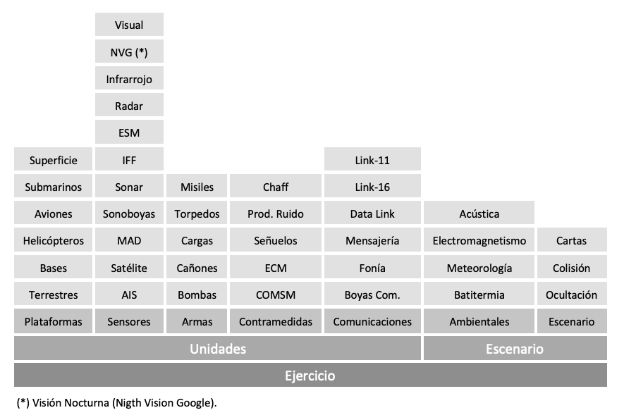
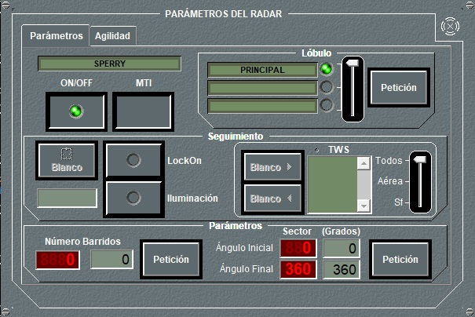

Descripción General
El Simulador Táctico Galeón es un sistema para adiestramiento de Oficiales Tácticos mediante la simulación de operaciones aeronavales. Permite la preparación, ejecución y análisis de Ejercicios que simulan el entorno táctico observado por las unidades participantes.
El simulador está diseñado para la simulación de Ejercicios que involucran a dos o tres fuerzas, compuestas por unidades de superficie, submarinas, areas y terrestres, en un escenario naval, considerando la influencia del entorno ambiental, y cuidando al máximo el realismo en el comportamiento de las unidades en cuanto a su dinámica y al funcionamiento de los diferentes sensores, armas, equipos de comunicaciones y de guerra electrónica.
Para la simulación completa de operaciones aeronavales, el Simulador Táctico Galeón dispone de modelos matemáticos de todos los elementos que intervienen de forma significativa en dichas operaciones (sensores, armas, comunicaciones y contramedidas.) los cuales son incorporados a los modelos de unidades. Las unidades son incorporadas a su vez a los ejercicios, y su comportamiento se ve afectado por el escenario asignado a dicho Ejercicio.
La estructura de modelos del Simulador Táctico Galeón es la siguiente:

Dentro de los distintos tipos de equipos (sensores, armas, comunicaciones, contramedidas...), y para cada uno de estos modelos genéricos (radar, sonar, misil,...), el Simulador Táctico Galeón admite suficientes parámetros de configuración, de modo que ajustando correctamente dichos parámetros, se consigue simular una amplia gama de equipos concretos disponibles en el mercado actual. Así mismo, las unidades simuladas durante un Ejercicio, son también configurables, tanto en sus características generales como en los distintos equipos que incorporan. Por último, también pueden ser configurados los escenarios sobre los que se simulan los Ejercicios.
Todas estas distintas configuraciones de equipos, unidades, escenarios y su incorporación en distintos Ejercicios (Preparación) son almacenadas en una Base de Datos, que puede ser actualizada en función de las novedades del mercado y por tanto ir creciendo durante la vida del Simulador. Combinando los distintos elementos disponibles en la Base de Datos, se pueden simular un número ilimitado de situaciones tácticas de interés.
Para la gestión de la información introducida en esta Base de Datos, el Simulador dispone de una aplicación específica de fácil uso con ventanas especializadas para los diferentes equipos, y que ofrece al usuario distintas ayudas para facilitar tanto la parametrización de los modelos básicos (armas, sensores, comunicaciones, escenarios...) como la preparación completa de los Ejercicios.

Haciendo uso de los datos almacenados durante el proceso de la Preparación, el Simulador permite la ejecución simultánea de hasta cuatro Ejercicios distintos.
La Ejecución de un Ejercicio consiste en la realización de los cálculos asociados a todos y cada uno de los modelos incorporados al mismo, ya sea en las distintas unidades o en el escenario, interactuando entre ellos. Como resultado de estos cálculos, y en función de las características de cada una de las unidades participantes, se elaboran las distintas situaciones tácticas resultantes observadas por dichas unidades.
El resultado de las situaciones tácticas para cada una de las unidades es mostrado por el Simulador en la o las Consolas de Alumno asignadas a dicha unidad. La Consola de Alumno ha sido diseñada con las herramientas gráficas más avanzadas, para dotar a cada alumno de un centro de control virtual desde donde puede visualizar todos los aspectos tácticos del combate y ejercer el gobierno de la unidad o unidades que se le hayan asignado y de los equipos disponibles en las mismas.
El diseño de las consolas se inspira en las consolas tácticas para buques de guerra, de forma que el alumno identifica de inmediato esta consola con las que habitualmente se encuentran instaladas en los CIC de los buques de las armadas ms modernas del mundo.

En las Consolas de Alumnos, la Situación Táctica se presenta en el monitor superior sobre una cartografa digital y con simbología NTDS o STANAG-4420. En el monitor inferior se presentan de forma permanente Paneles Resumen del estado de la unidad y de todos sus equipos. Actuando sobre la pantalla táctil, el operador puede acceder de forma directa a los Paneles de Detalle de cada uno de los equipos y actuar sobre los mismos.

En la imagen superior se pueden observar las pantallas de una Consola de Alumno: en su parte superior la situación táctica, y en la inferior, los paneles resumen, con un panel de detalle desplegado en el centro. El mismo panel de detalle se muestra ampliado en la siguiente imagen.

Las consolas están conectadas en red, y el software es de arquitectura distribuida, lo cual permite que el Simulador Táctico Galeón sea totalmente escalable, facilitando su instalación con diferentes tipos de Arquitectura hardware y software, y con un número variable de consolas en función del número de alumnos a los que se desee adiestrar.
La capacidad de procesamiento necesaria para el Simulador Táctico Galeón depende del número de unidades que se desean simular en un Ejercicio. En aquellos casos en los que se precise un número de unidades participantes alto, puede ser necesario incorporar un Servidor en la red, que potencie la capacidad de procesamiento total del Simulador.
El simulador permite tanto la asignación de varias unidades a una consola como la asignación de una unidad a varias consolas. En el primer caso el alumno tendra en cada momento el control de una de las unidades asignadas, pudiendo conmutar a otra de ellas cuando lo estime oportuno. En el segundo caso, una misma unidad puede tener asignada hasta diez consolas de alumnos, de forma que se proporcionen los puestos necesarios para el adiestramiento conjunto de dotaciones de oficiales tácticos para la unidad simulada. Estas consolas de una misma unidad pueden ser ubicadas en Cabinas de Alumnos, simulándose de forma realista el CIC de las unidades.
Las consolas que actúan como Consolas de Instructor presentan en sus pantallas unos diálogos especializados que permiten a su operador realizar labores de control y supervisión a nivel de consola de alumno, de unidad y de Ejercicio. Entre otras acciones, los instructores pueden monitorizar en detalle las actividades de cada alumno, alterar las condiciones del Ejercicio, y visualizar información más relevante.
Tanto la asignación de Consolas de Alumno a las unidades participantes en un Ejercicio como la asignación de consolas que actúen como Consolas de Instructor son realizadas en la preparación del Ejercicio seleccionándolas de entre todas las consolas disponibles, sin que exista ninguna limitación a este respecto.
El simulador permite la grabación de la ejecución de un Ejercicio de forma que posteriormente puede ser reproducido para su Análisis. Durante la ejecución, el instructor puede marcar las situaciones de interés que observe, de forma que durante la reproducción del Ejercicio podrá situarse en ellas cómodamente. Además el simulador le permite generar una serie de archivos auxiliares para completar el Análisis que pueden ser capturas gráficas, capturas de audio y distintos informes de acciones.